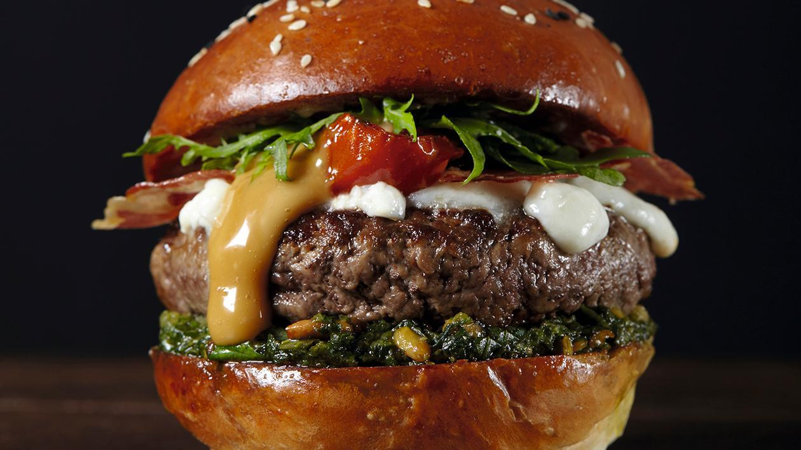

Hamburguesa de Ternera al Pesto
12 de Julio 2018, Argentina Ingredientes: Para la salsa: Mayonesa Hellmann's bocabajo 430ml y Vinagre balsámico. Hamburguesa: Pan de hamburguesa 1 unidad, Carne burger ternera 125g, Albahaca, Piñones, Queso parmesano, Tomates, Ajo, Aceite de oliva, Cereza, Panceta, Escarola y Mozzarella. Preparación Salsa: Reducir el vinagre balsámico hasta obtener una consistencia de jarabe y dejar enfriar. Combinar con mayonesa Helmann's al gusto. Preparación Hamburguesa: Picar la carne muy fina a cuchillo o con la picadora ajustada a un grosor correcto. Presionar la carne para unirla firmemente y darle forma de hamburguesa. Sazonarla con sal y pimienta y cocinarla por ambos lados a fuego fuerte. Cortar el pan por el lado abierto y poner ambas mitades a tostar en la plancha. Colocar la hamburguesa de ternera sobre el pan untado con el pesto (albahaca, piñones, queso parmesano, ajo y aceite de oliva). Para finalizar, adorne con queso mozzarella, panceta crujiente, mayonesa de vinagre balsámico, tomates cherry asados y escarola.